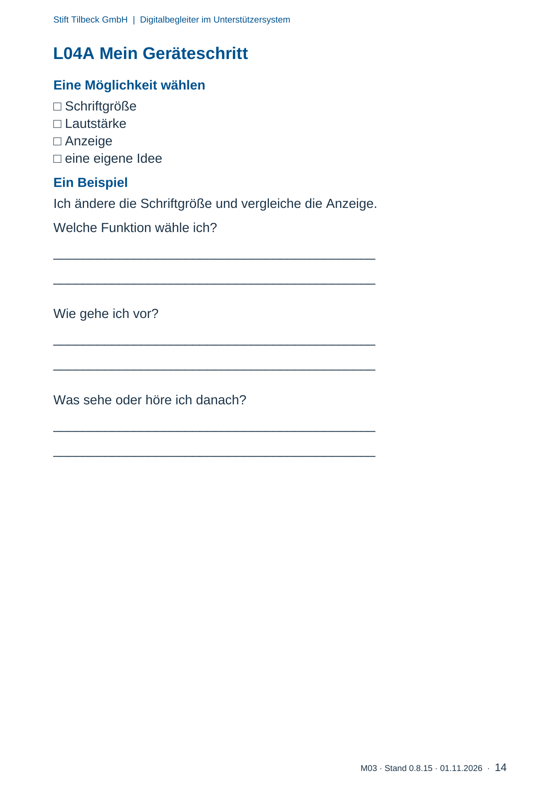

M03 · Originalseite 14
Mein Geräteschritt
Gezielte Original-Druckauswahl.
Fragen und Ankreuzfelder werden auf dem Ausdruck bearbeitet. Die Lesefassung speichert keine Antworten.
Lesefassung · Seite 14
Stift Tilbeck GmbH | Digitalbegleiter im Unterstützersystem
M03 · Stand 0.8.15 · 01.11.2026 · 14
L04A Mein Geräteschritt
Eine Möglichkeit wählen
- Schriftgröße
- Lautstärke
- Anzeige
- eine eigene Idee
Ein Beispiel
Ich ändere die Schriftgröße und vergleiche die Anzeige.
Welche Funktion wähle ich?
Antwortbereich auf dem Ausdruck
Wie gehe ich vor?
Antwortbereich auf dem Ausdruck
Was sehe oder höre ich danach?
Antwortbereich auf dem Ausdruck
Originalseite ansehen
